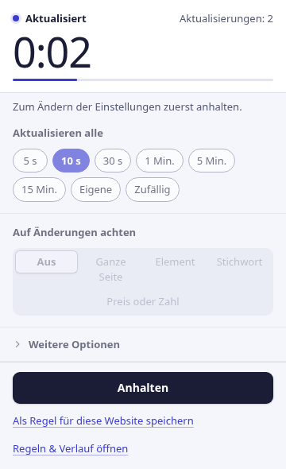
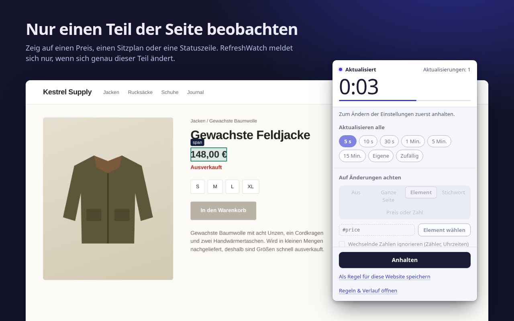
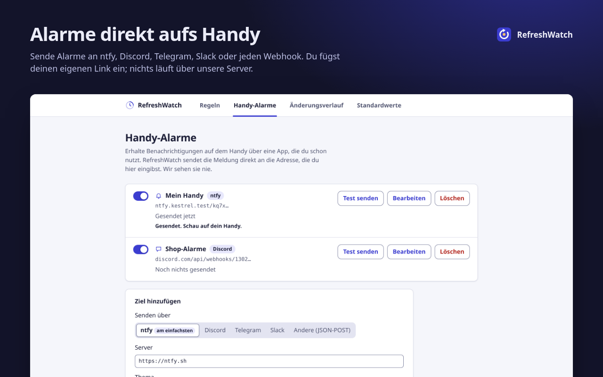
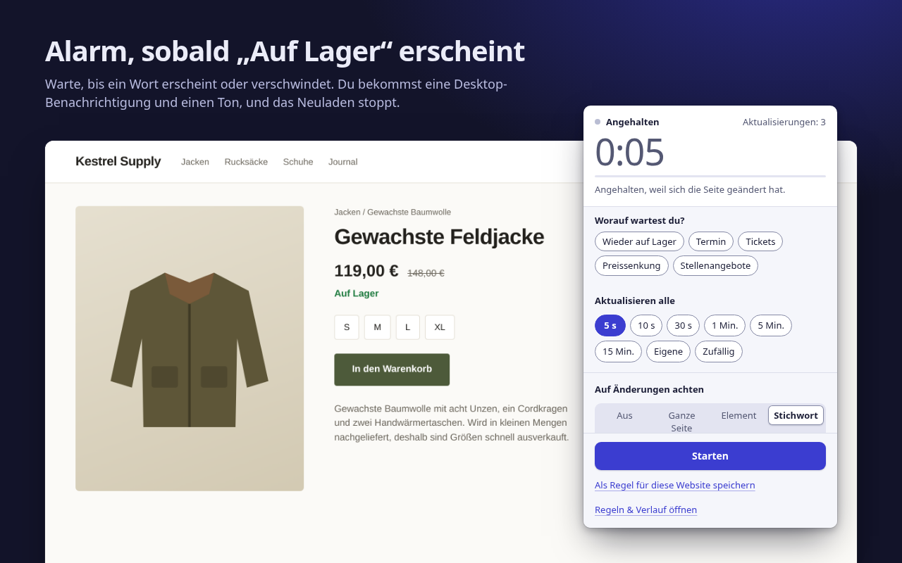

Es lädt neu. Du verpasst nichts.
RefreshWatch lädt jeden Chrome-Tab per Timer neu und meldet sich in dem Moment, in dem sich die Seite ändert: ein neuer Preis, ein Wort wie „Auf Lager“, ein frei gewordener Termin.
Kein Konto. Keine Server von uns. Für Chrome 120 und neuer.

Sag ihm, worauf es achten soll
Für einfaches automatisches Neuladen reicht ein Intervall. Mit einer Überwachung vergleicht RefreshWatch die Seite nach jedem Neuladen und meldet Änderungen mit einer Benachrichtigung und einem Ton.
Die ganze Seite
Jede Änderung am sichtbaren Text. Schalte „Wechselnde Zahlen ignorieren“ ein, damit Uhren und Zähler keinen Alarm auslösen.
Ein Element
Zeig auf einen Preis, einen Sitzplan oder eine Statuszeile. Nur dieser Teil zählt, der Rest der Seite darf sich beliebig ändern.
Ein Stichwort
Alarm, wenn ein Wort erscheint, etwa „Auf Lager“, oder wenn eines verschwindet, etwa „Keine Termine verfügbar“.

Alarme aufs Handy und bei Preissenkungen
Füge dein eigenes ntfy-Thema, deine Discord-, Telegram- oder Slack-Adresse oder einen beliebigen Webhook hinzu, und RefreshWatch schickt den Alarm direkt dorthin. Kein Konto bei uns, und nichts läuft über unsere Server.
Benachrichtigung aufs Handy, wenn sich eine Website ändert · Preisalarm für Chrome (auf Englisch)

Kostenlos: Funktionen, für die andere Erweiterungen Geld verlangen
Jede der folgenden Funktionen steckt bei mindestens einer beliebten Erweiterung zum automatischen Neuladen oder zur Seitenüberwachung hinter einem Bezahltarif. In RefreshWatch gehört sie einfach dazu: kein Bezahltarif, keine Testphase, kein Konto. Manche Bezahl-Extras anderer Anbieter, etwa Makros, Alarme per E-Mail oder SMS und Prüfungen in der Cloud, bietet RefreshWatch gar nicht an.
| Funktion | Was du bekommst | RefreshWatch |
|---|---|---|
| Nur einen Teil der Seite beobachten | Beliebiges Element wählen; Alarm nur, wenn es sich ändert | Gratis |
| Stichwort-Alarm | Ein Wort oder eine Wortgruppe erscheint oder verschwindet | Gratis |
| Nach dem Neuladen klicken | Schaltfläche und Wartezeit selbst wählen | Gratis |
| Zufälliges Intervall | Irgendwo zwischen zwei Werten, von 1 Sekunde bis 24 Stunden | Gratis |
| Einstellungen pro Seite speichern | Regeln nach exakter URL, Anfang oder Platzhalter, die von selbst starten | Gratis |
| Keine Obergrenze für Überwachungen | So viele Tabs und Regeln, wie du willst | Gratis |
| Änderungsverlauf | Die letzten 50 Änderungen mit dem Text vorher und nachher | Gratis |
Verglichen mit den Bezahltarifen, die im Chrome Web Store und auf den Preisseiten der Anbieter genannt werden, Stand 9. Oktober 2026. Den Vergleich mit einer bekannten Erweiterung findest du auf der Seite zur Alternative (auf Englisch).
Nichts läuft über uns
RefreshWatch liest und vergleicht Seiten auf deinem Computer. Es hat keinen eigenen Server. Das Einzige, was es je verschickt, ist ein Alarm, und zwar an ein Handy-Ziel, das du selbst eingerichtet hast.
- Kein KontoInstallieren und loslegen. Es gibt nichts, wofür du dich anmelden musst.
- Keine Analyse, keine Werbung, kein TrackingKeine Netzwerkanfragen außer den Handy-Alarmen, die du einrichtest.
- Zugriff immer nur auf eine WebsiteEinfaches Neuladen braucht keinen Website-Zugriff. Schaltest du die Überwachung für eine Website ein, fragt Chrome nur nach dieser einen Website.
- Lokal gespeichertRegeln, Einstellungen und Änderungsverlauf bleiben in Chrome auf diesem Computer und verschwinden, wenn du die Erweiterung entfernst.
In drei Schritten vom offenen Tab zum Alarm
Intervall wählen
Klicke im Tab auf das RefreshWatch-Symbol. Wähle 5 s bis 15 Min., eine eigene Zeit oder einen Zufallsbereich.
Festlegen, was beobachtet wird
Die ganze Seite, ein Element, auf das du zeigst, oder ein Stichwort. Oder gar nichts, für einfaches automatisches Neuladen.
Alarm bekommen
Sobald die Änderung eintritt, bekommst du eine Benachrichtigung und einen Ton, und das Neuladen stoppt. Speichere es als Regel, dann startet es beim nächsten Mal von selbst.

Schluss mit ständigem Neuladen
Kostenlos im Chrome Web Store, auf Englisch, Arabisch, Deutsch, Spanisch, Französisch, Japanisch, brasilianischem Portugiesisch, vereinfachtem Chinesisch und Russisch.